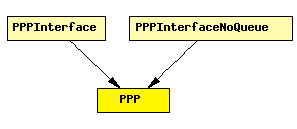

File: NetworkInterfaces/PPP/PPP.ned
C++ definition: click here
PPP implementation.
Packets are encapsulated in PPPFrame.
PPP is a complex protocol with strong support for link configuration and maintenance. This model ignores those details, and only performs simple encapsulation/decapsulation and queuing.
In routers, PPP relies on an external queue module (see OutputQueue) to model finite buffer, implement QoS and/or RED, and requests packets from this external queue one-by-one.
In hosts, no such queue is used, so PPP contains an internal queue named txQueue to queue up packets waiting for transmission. Conceptually, txQueue is of infinite size, but for better diagnostics one can specify a hard limit in the txQueueLimit parameter -- if this is exceeded, the simulation stops with an error.
There is no buffering done on received packets -- they are just decapsulated and sent up immediately.
See also: PPPInterface, OutputQueue, PPPFrame
The following diagram shows usage relationships between modules, networks and channels. Unresolved module (and channel) types are missing from the diagram. Click here to see the full picture.
If a module type shows up more than once, that means it has been defined in more than one NED file.
| PPPInterface | PPP interface. Complements the PPP module with an output queue for QoS and RED support. |
| PPPInterfaceNoQueue | PPP interface. Assumes inifinite queue. |
| Name | Type | Description |
|---|---|---|
| txQueueLimit | numeric | only used if queueModule==""; zero means infinite |
| queueModule | string | name of external (QoS,RED,etc) queue module |
| Name | Direction | Description |
|---|---|---|
| physIn | input | |
| physOut | output | |
| netwIn | input | |
| netwOut | output |
simple PPP parameters: txQueueLimit: numeric, // only used if queueModule==""; zero means infinite queueModule: string; // name of external (QoS,RED,etc) queue module gates: in: physIn; out: physOut; in: netwIn; out: netwOut; endsimple